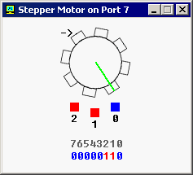

TEXT SCRAMBLING in TRIAL VERSION OUTPUT! In evaluation mode, Help+Manual will scramble individual characters in random words in your published output files. This is a limitation of the free trial version. This help system was created with an evaluation copy of Help+Manual.
Порты ввода/вывода
Перевод: Поляков А.В. http://www.avprog.narod.ru
Эмулятор не воспроизводит каие-либо оригинальные порты ввода/вывода. Вместо этого он имеет виртуальные устройства, которые могут быть доступны через команды IN/OUT.
Пользовательские устройства ввода/вывода.
"Emu8086" поддерживает дополнительные устройства, которые могут быть созданы сторонними организациями. Устройство должно быть написано на каком-либо языке программирования, например: Visual Basic, VC++, Delphi. Более подробную информацию и примеры исходного кода ищите в папке DEVICES.
Для пользовательских устройств зарезервированы адреса: от 00000Fh до 0FFFFh (от 15 до 65535). Порт 100 соответствует байту 100 в файле "EmuPort.io", порт 101 - байту 101 и т.п... (отсчет ведется от нуля). Файл "EmuPort.io" размещен в каталоге Windows "Temp" (может быть получен с помощью API функции GetTempPath()).
Я буду рад включить разработанные вами устройства в следующий выпуск "Emu8086". Если вы решите поделится своим устройством с другими разработчиками - пожалуйста, вышлите его исходный код нам!
Устройства, которые доступны через меню эмулятора "Virtual Devices".
•Светофор - Порт 4 (слово)
Светофор управляется пересылкой данных через порт ввода/вывода 4. Имеются 12 ламп: 4 зеленых, 4 желтых и 4 красных.
Вы можете управлять состоянием каждой лампы, устанавливая эти биты:
1 - лампа включена. 0 - лампа выключена.
Используются только 12 младших битов слова (от 0 до 11), последние биты (от 12 до 15) не используются Пример:
MOV AX, 0000001011110100b OUT 4, AX
Мы используем в подписях к рисунку шестнадцатиричные цифры желтого цвета (для компактности). Ниже приведена таблица преобразования шестнадцатиричных цифр в десятичные: Шест. - Десят.
Первый операнд для команды OUT - это номер порта (4), второй операнд - это слово (AX), которое записывается в порт. Первый операнд должен быть непосредственным значением в диапазоне (0..255) или регистром DX. Второй операнд должен быть только регистром AX или AL.
См. также "traffic_lights.asm" в Samples.
Если нужно, вы можете прочитать данные из порта, используя команду IN, например:
IN AX, 4
Первый операнд в команде IN (AX) получает значение из порта, второй операнд (4) - это номер порта. Первый операнд должен быть только регистром AX или AL. Второй операнд должен быть непосредственным значением от 0 до 255 или регистром DX.
•Шаговый двигатель - Порт 7 (байт)
Шаговый двигатель управляется посылкой данных в порт ввода-вывода 7.
Шаговый двигатель - это электромотор, который может точно управляться сигналами от компьютера.
Двигатель поворачивается на определенный угол каждый раз, когда он принимает сигнал. Изменяя соотношение между продолжительностью импульсов и пауз, можно заставить двигатель вращаться с разной скоростью или повернуть ротор на заданный угол и сотановить двигатель.
В основе 3-х фазного шагового двигателя лежит конструкция из 3-х магнитов, управляемых битами 0, 1 и 2. Остальные биты (2..7) не используются.
Когда магнит работает, он становится красным. Стрелка в левом верхнем углу показывает направление последнего движения мотора. Зеленая линия здесь только для того, чтобы видеть реальное вращение.

Например, код, приведенный ниже, позволяет выполнить три полушага по часовой стрелке:
MOV AL, 001b ; инициализация. OUT 7, AL
MOV AL, 011b ; полушаг 1. OUT 7, AL
MOV AL, 010b ; полушаг 2. OUT 7, AL
MOV AL, 110b ; полушаг 3. OUT 7, AL
Если вы когда-либо играли с магнитами, вы поймете, как это работает. Попробуйте поэксперементировать, или см. "stepper_motor.asm" в Samples.
Если потребуется, вы должны прочитать данные из порта, используя команду IN, например:
IN AL, 7
•Робот - Порт 9 (3 байта)
Робот управляется посылкой данных в порт ввода-вывода 9.
Первый байт (Порт 9) - это Командный регистр. Запись данных в этот порт заставляет робота выполнять определенные действия. Поддерживаются следующие значения:
Второй байт (порт 10) - это Регистр данных. Этот регистр устанавливается после завершения задачи командой Исследование:
Третий байт (порт 11) - это Регистр состояния. Чтение данных из этого порта позволяет определить состояние робота. Каждый бит имеет определенное свойство:
Пример: MOV AL, 1 ; движение вперед.
Примите во внимание, что робот - это механическое создание, поэтому для выполнения команд ему требуется какое-то время. Вы должны всегда проверять бит#1 Регистра состояния, прежде чем записать данные в порт 9, иначе робот откажется выполнять вашу команду и вы увидите надпись "BUSY!". См. "robot.asm" в Samples.
Создание пользовательсокой Карты мира робота
Вы можете создать любую карту для робота, используя панель инструментов (см. рис.).
Если вы выберите робота и разместите его над существующим роботом, он повернется на 90 градусов по часовой стрелке. Чтобы передвинуть робота на другое место, щелкните по нему, затем щелкните в нужном месте карты.
Если вы выберите лампу и разместите ее над включенной лампой, то лампа будет выключена, если лампа уже выключена, то она будет удалена.
Если разместить стену над существующей стеной, то стена будет удалена.
Данная версия работает только с одним роботом. Если вы забудете разместить робота на карте, то он будет помещен туда автоматически в случайном месте.
Карта автоматически сохраняется после выхода.
Щелчок правой кнопкой по карте вызовет меню, которое позволяет включать/выключать все лампы.
|